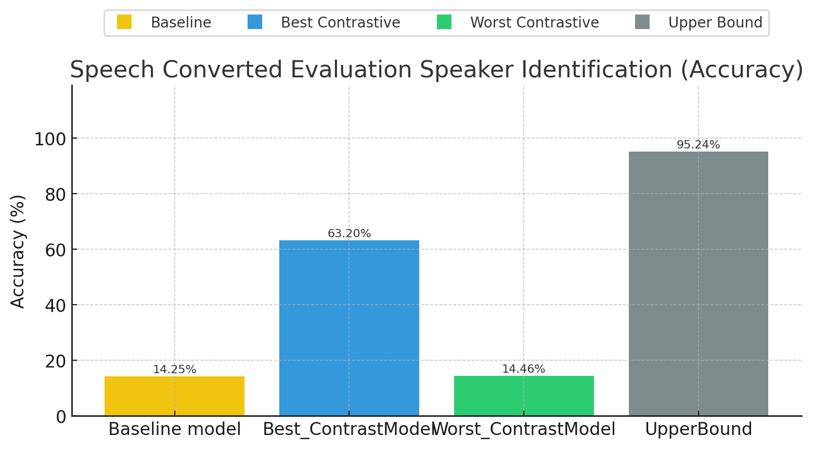
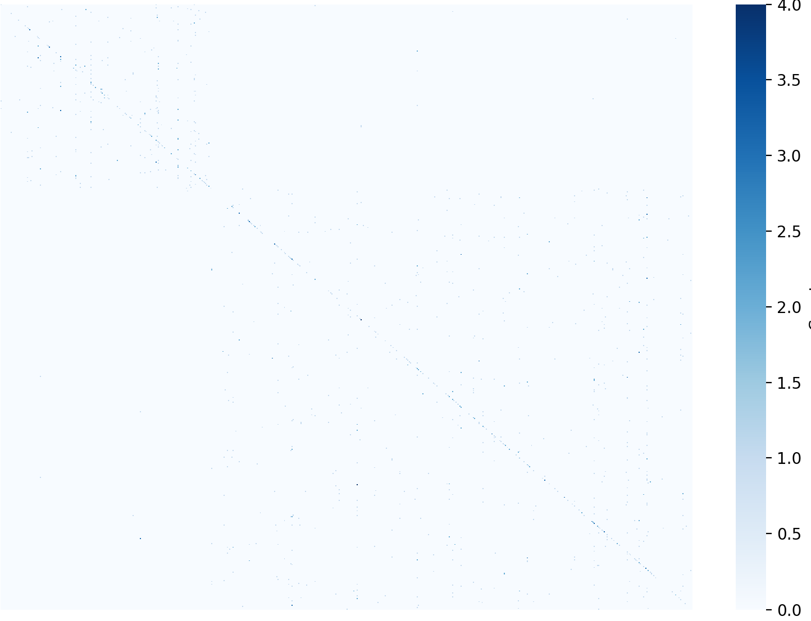
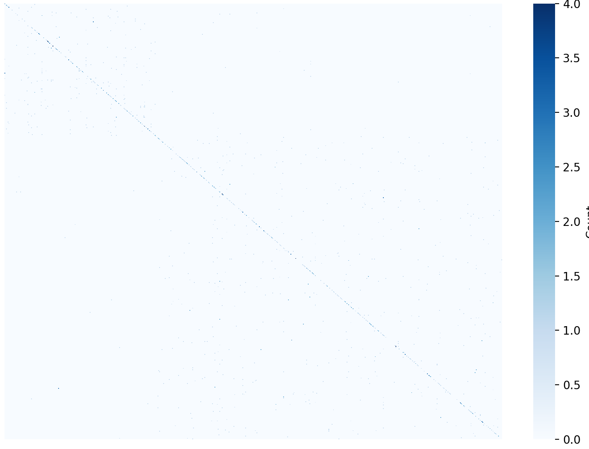
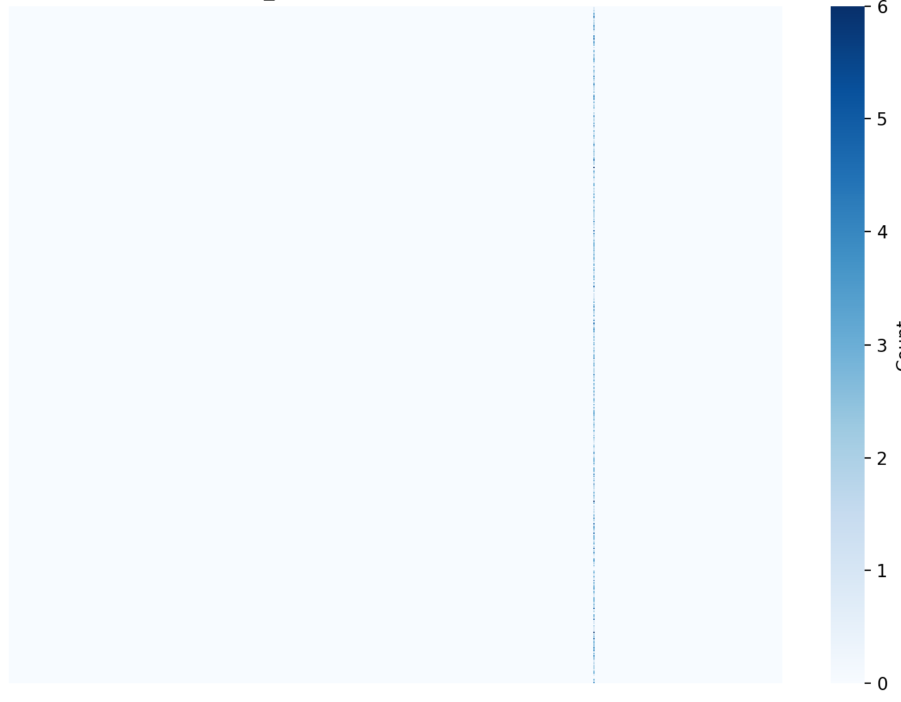
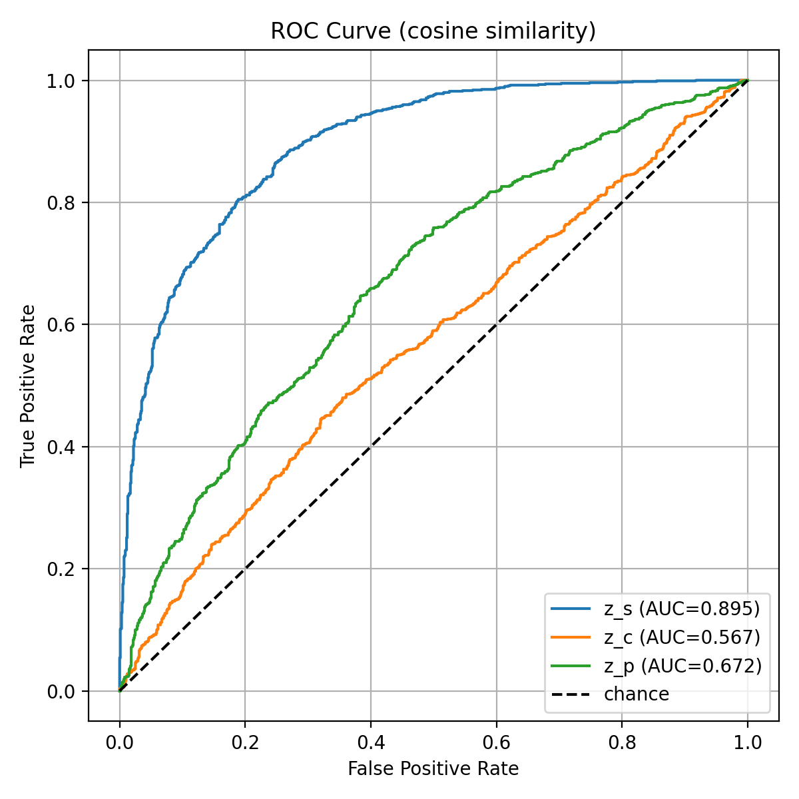
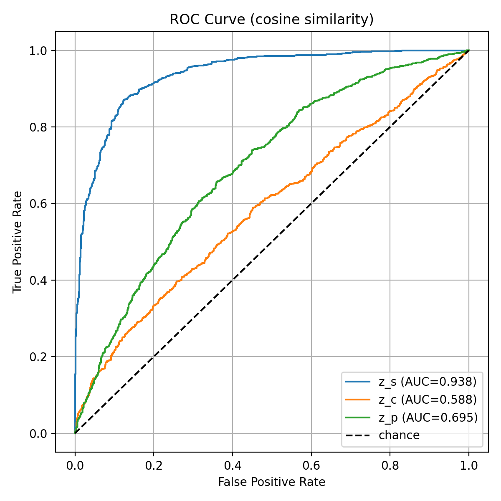
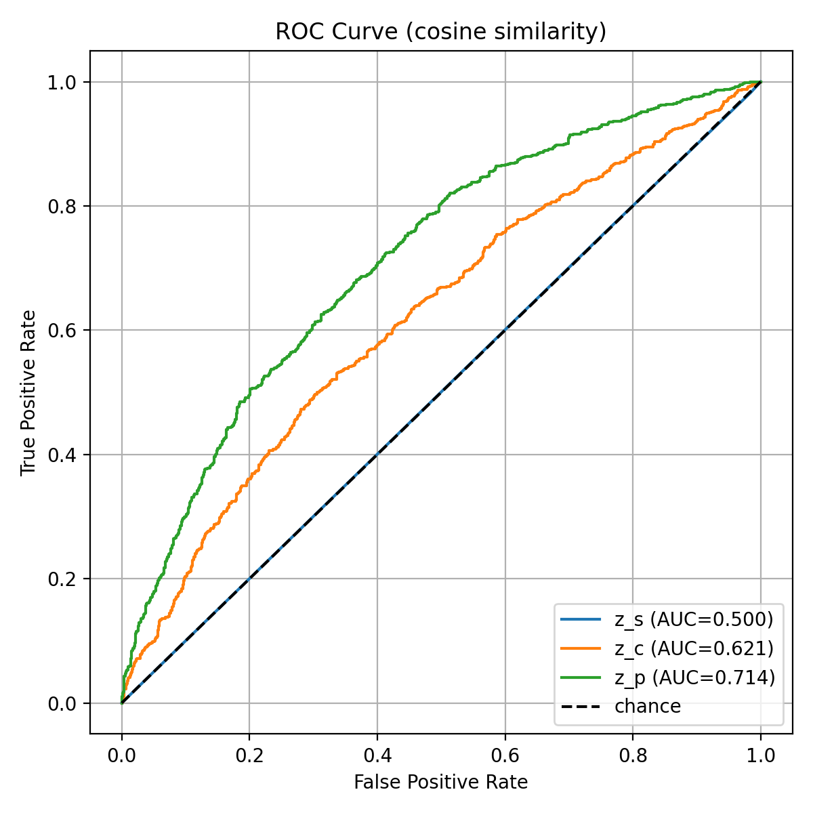
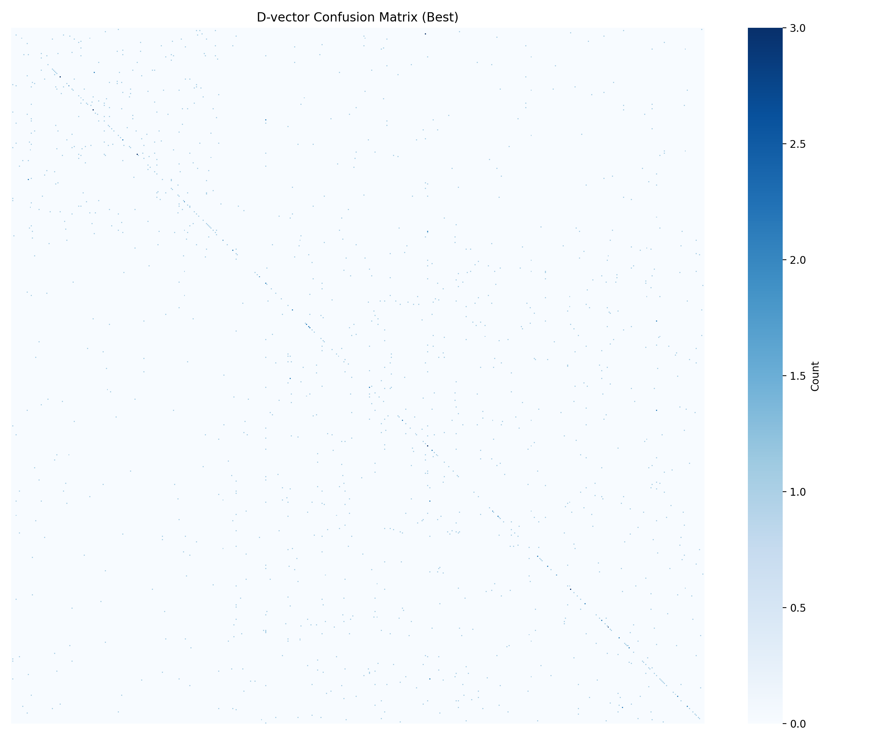
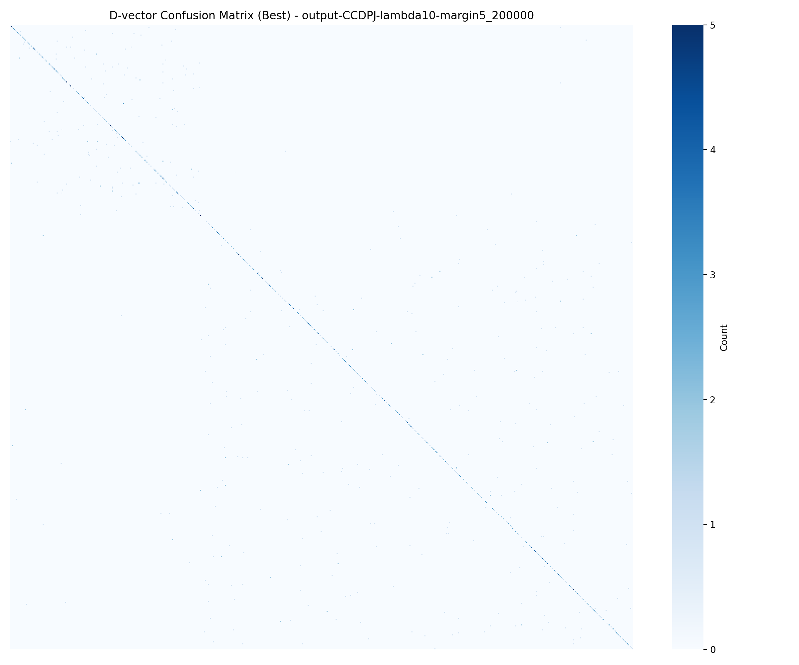
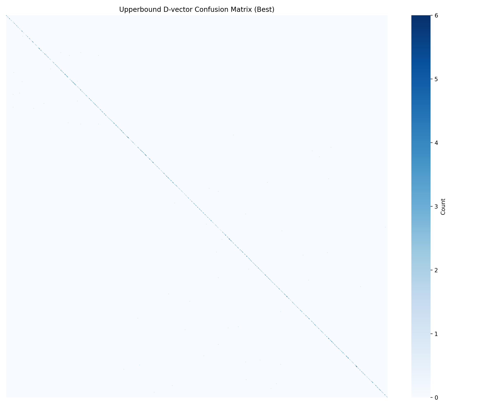

Disentangled Speech Representation Learning with Binary Contrastive Loss: Improving Speaker Consistency in Voice Conversion
Optional: set a GitHub Personal Access Token (PAT) to avoid API rate limits / access private repos.
Voice Conversion Comparison Demo
Latents Probing Speaker Verification (SV)
| EER | Baseline model | Best_contrastModel | Model Configuration | Worst_contrastModel | Model Configuration |
|---|---|---|---|---|---|
| zs | 19.5% | 14.3% | lambda1.0-margin0.5 | 75.7% | lambda10-margin0.5 |
| zc | 45% | 47.2% | lambda1.0-margin0.5 | 43.8% | lambda0.1-margin0.7 |
| zp | 33.5% | 38.9% | lambda0.1-margin0.7 | 32.1% | lambda1.0-margin5 |
Notes: lower EER is better.
Latents Probing Speaker Identification (SID)
| Acc | Baseline model | Classifier Configuration | Best_contrastModel | Model Configuration | Classifier Configuration | Worst_contrastModel | Model Configuration | Classifier Configuration |
|---|---|---|---|---|---|---|---|---|
| zs | 21.75 | Epoch:30, LR:0.1, Weight decay:0.0 | 36.27% | lambda0.1-margin5 | Epoch:30, LR:0.1, Weight decay:0.0 | 0.32% | lambda10-margin0.5 | Epoch:20, LR:0.1, Weight decay:0.0 |
| zc | 3.95 | Epoch:30, LR:0.1, Weight decay:0.0 | 2.3% | lambda1.0-margin1 | Epoch:30, LR:0.1, Weight decay:0.0 | 4.68% | lambda0.1-margin0.7 | Epochs:30,LR:0.1,weight_decay:0.0 |
| zp | 1.98 | Epochs:30,LR:0.1,weight_decay:0.0 | 1.59% | lambda0.1-margin0.7 | Epochs:30,LR:0.1,weight_decay:0.0 | 2.22% | lambda1.0-margin5 | Epoch:30, LR:0.1, Weight decay:0.0 |
Notes: higher Acc is better.
Speech Converted Evaluation Speaker Verification
| EER | Baseline model | Model Hyperparameter |
|---|---|---|
| BaseModel | 43.2% | |
| Best_ContrastModel | 21.4% | lambda10-margin5 |
| Worst_ContrastModel | 43.9% | lambda1.0-margin1 |
| UpperBound | 5.7% |
Notes: lower EER is better; UpperBound represents oracle performance.
Speech Converted Evaluation Speaker Identification
| Model | Acc | Classification Hyperparameter | Model Hyperparameter |
|---|---|---|---|
| Baseline model | 14.25% | Epoch:30, LR:0.1, Weight decay:0.0 | |
| Best_ContrastModel | 63.2% | Epoch:30, LR:0.1, Weight decay:0.0 | lambda10-margin5 |
| Worst_ContrastModel | 14.46% | Epoch:30, LR:0.1, Weight decay:0.0 | lambda1.0-margin0.5 |
| UpperBound | 95.24% | Epoch:10, LR:0.1, Weight decay:0.0 |
Notes: higher Acc is better; UpperBound is an oracle performance reference.
Experiment Results Overview
Latent Probing SV
.png)
Latent Probing SID
.png)
Converted SV
.png)
Converted SID
Latent Probing SID Confusion Matrix
BaseModel Latent Probing z_s Confusion Matrix
BestModel Latent Probing z_s Confusion Matrix
WrostModel Latent Probing z_s Confusion Matrix
Latent Probing SV ROC Curve
BaseModel Latent probing ROC Curve
BestModel Latent probing ROC Curve
WrostModel Latent probing ROC Curve
Converted Speech Evaluation SID Results
BaseModel Converted Speech Evaluation z_s Confusion Matrix
BestModel Converted Speech Evaluation z_s Confusion Matrix
UpperBound Converted Speech Evaluation z_s Confusion Matrix
WorstModel Converted Speech Evaluation z_s Confusion Matrix